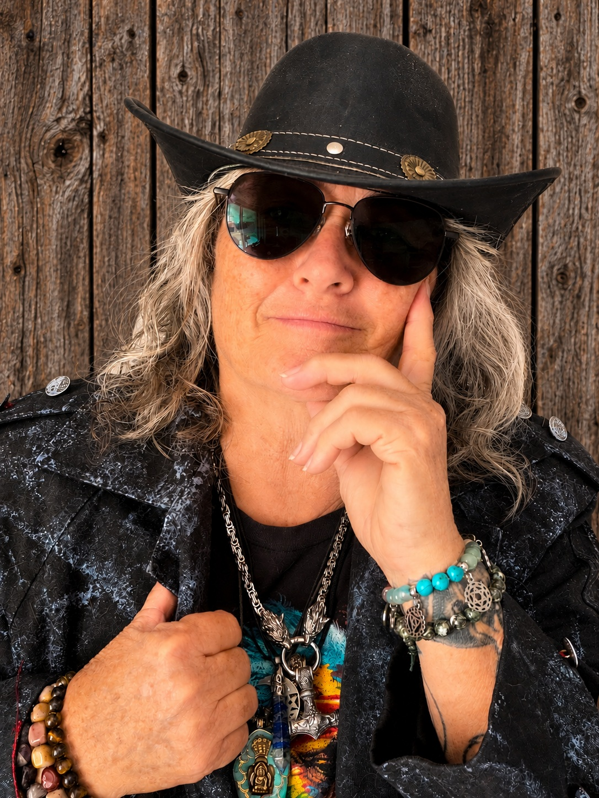

Meet the Maker
Creativity Meets Curiosity
Sandi has always been a creative mind with a talent for seeing new possibilities in the things around her. Whether repurposing an object that has outlived its original purpose or finding an entirely new use for something, she has always enjoyed turning ideas into something useful.
Her journey into paranormal research began when she met her wife, Jen, and was introduced to a world that combined curiosity, investigation, and the unexplained.
As someone who considers herself naturally intuitive, Sandi has never felt that she needed a device to tell her when something unseen might be nearby. Jen, however, approaches investigations differently, relying on tools and environmental observations to identify changes that might otherwise go unnoticed.
Their different perspectives became the foundation for a shared approach to paranormal research.
Where It All Began: Seymore
Sometimes the best ideas begin with looking at an ordinary object in an extraordinary way.
Sandi started experimenting with an item originally purchased to make plants produce music. By combining it with a board, wires, a power source, a plant, and code she wrote herself, she transformed the setup into an experimental proximity sensor.
After testing and refining the idea, Seymore was born.
What began as a creative experiment became the starting point for a much larger journey into designing and building experimental paranormal investigation tools.
A Different Way to Investigate
Sandi's curiosity didn't stop with Seymore. She began exploring how electronics, microcontroller boards, and custom code could be used to rethink familiar paranormal investigation tools.
Her projects explore new ways to interact with spirit-board-style systems and word-data-bank devices, while also incorporating environmental observations. The goal is to give investigators more context when evaluating unusual letters, words, or other responses.
Could an apparent response be an anomaly? Could an environmental change help explain it? What additional information can be gathered before drawing a conclusion?
These are the kinds of questions that inspire her experiments.
Beyond the Veil
McG"eye"ver of the Underworld brings together Sandi's creativity and Jen's interest in scientific research and environmental observation.
Together, they're exploring new ways to approach paranormal investigation—not by assuming every unusual result is paranormal, but by building tools that encourage researchers to observe, question, test, and consider possible explanations.
The mission is to give investigators new ways to explore the unexplained, and to keep pushing the boundaries of what experimental technology can bring to the field.